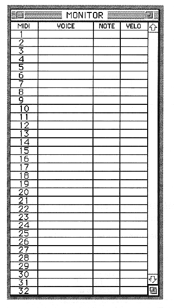

Return to previous page ｜ Return to menu ｜ Go to next page
●MONITOR
- Opens / closes the MONITOR window.

For details on the MONITOR window, refer to “■ MONITOR window” in 7. Window.
-
FM menu
●UPDATE
After selecting a layer in the - Layer window, select UPDATE to update the one with the same start note and end note as the selected layer.
Return to previous page ｜ Return to menu ｜ Go to next page